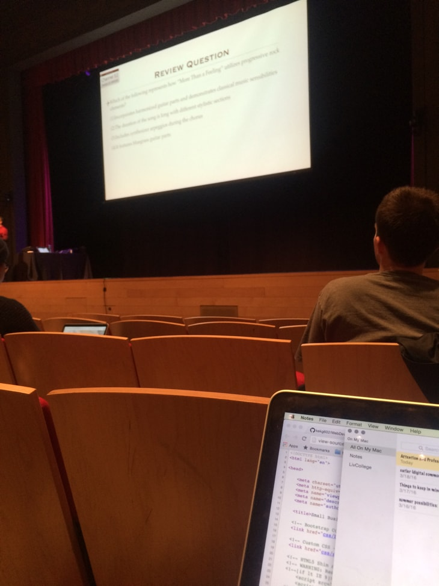

Qualitative and Quantitative Data


I observed how large lectures made use of clickers to increase audience participation and make lectures more interesting. I also surveyed professors and students about clickers. In addition, 54 students took part in a research study I designed. The students watched three different online lectures followed by three different feedback mechanisms: freeform feedback, multiple choice relating to their viewing experience, and multiple choice relating to the lecture content. These results were then used in a survey to professors, who could not view the lectures themselves but only the feedback provided by the students, and were then asked to rank the lectures in terms of difficulty and guess where improvements could be made.

Insights
The study and surveys revealed that free form feedback is preferred by students but multiple choice questions related to academic content is preferred by professors. However, professors did agree that free form feedback helps note video quality issues that multiple choice questions cannot address. Based on this feedback, user journeys were created to initialize the product creation. However, it can be argued more research needs to be done.